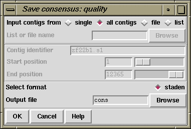

The Quality Consensus Output option described here (which is available from the gap4 File menu) applies either of the two simple consensus calculations (see section Consensus Calculation Using Base Frequencies) and (see section Consensus Calculation Using Weighted Base Frequencies) to the data for each strand of the DNA separately. The currently active consensus algorithm is selected from the "Consensus algorithm" dialogue in the main gap4 Options menu (see section Consensus Algorithm).
It produces, not a consensus sequence, but an encoding of the "quality" of the data which defines whether it has been determined on both strands, and whether the strands agree. The categories of data and the codes produced are shown in the table. For example 'c' means bad data on one strand is aligned with good data on the other.

The contigs for which to calculate a consensus can be a particular "single" contig, "all contigs", or a subset of contigs whose names are stored in a "file" or a "list". If a file or list is selected the browse button will be activated, and if it is clicked, an appropriate browser will be invoked. If the user selects "single" then the dialogue for choosing the contig and the section to process becomes active.
The routine can only write its consensus sequence in "staden" format. The output file can be chosen with the aid of a file browser.